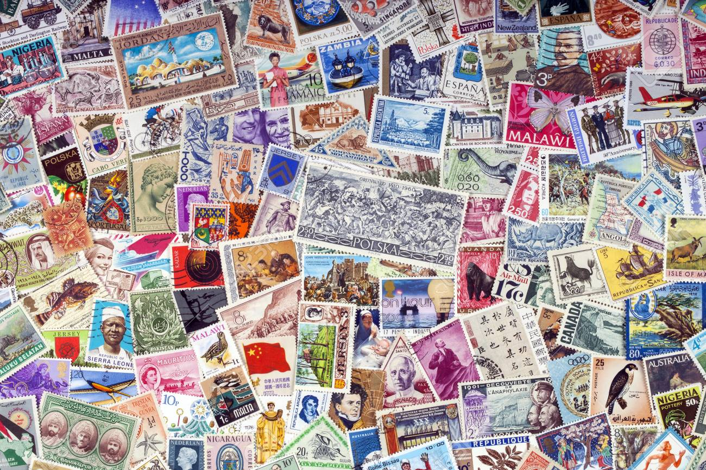

Bienvenue chez Philatélio !
Achetez en ligne tous les timbres de collection en provenance de France, de Chine, de Monaco, d'Andorre, de Nouvelle-Calédonie, de Polynésie, de Saint-Pierre et Miquelon, des TAAF... Et profitez d'offres spéciales en permanence sur un grand nombre de timbres de collection.
Philatélio est le seul site où vous pourrez voir un visuel de votre timbre avant de l'acheter. Complétez en quelques clics votre collection de timbres quelle que soit sa catégorie : timbres-poste, poste aérienne, bloc et feuillet, carnets, timbres préoblitérés, timbres taxe.
Dans la rubrique "Produits", nous vous proposons un vaste choix de timbres pour enrichir en diversité votre collection de timbres. Dans ces pochettes de timbres, retrouvez des thèmes tels que : les timbres d'Afrique, les timbres d'Amérique et Caraïbes, les timbres sur les "Arts et Lettres", les timbres d'Asie et d'Océanie, les timbres d'Europe centrale, les timbres sur le thème de l'enfance, les timbres sur l'Histoire, les timbres sur la flore et la faune. Un vaste choix de timbres de tous pays unique sur le net !
Nous vous proposons également les timbres en années complètes. Ces ensembles vous permettent de bénéficier de tarif nettement plus attractif qu’au détail. Vous trouverez par ce moyen, la meilleure solution pour confectionner une collection complète et vous constituer un patrimoine.
Retrouvez rapidement le timbre que vous souhaitez grâce à notre classification de timbre par numéro ou par année.
On vous conseille de découvrir nos timbres de France, timbres de Chine, timbres de Monaco, timbres Europa, timbres Andorre, timbres de Nouvelle-Calédonie, ...